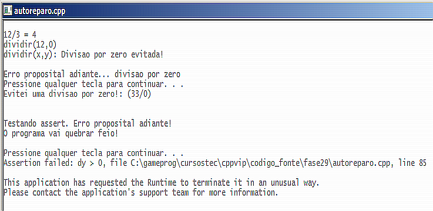
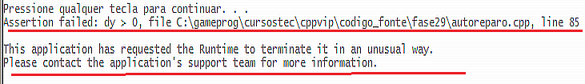
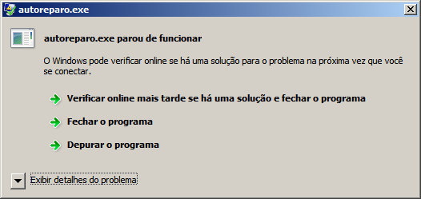

Curso completo de linguagem C++
Gameprog - Escola de programação de jogos digitais
Contato: gameprog.br@gmail.com
track29.html
29. Tratamento de erros
29.1 Visão geral
Como produtores de software temos de ter a preocupação de fornecer à nossa
audiência um software isento de erro. E isso não é uma tarefa fácil. Erros
de sintaxe são fáceis de serem identificados simplesmente porque o programa
não compila na presença desses erros.
Erros que são difíceis de rastrear são os erros lógicos passíveis de serem
cometidos em um programa. Ocorrem quando erramos a sequência de emissão
das instruções ou quando não entendemos a lógica de implementação de uma
funcionalidade. Esses erros somente o estudo, o autoaprimoramento e a
experiência podem reduzir o volume de ocorrências deles.
Há outros erros que ocorrem devido ao contexto aonde o software está inserido,
quem está operando o software e condições de hardware e do ambiente geral dos
programas instalados.
Sempre que for possível faça verificações no ambiente aonde o software está
instalado, por exemplo, antes de gravar ou ler dados de um arquivo verifique
se o mesmo existe e que foi aberto com sucesso; limite também as ações do
usuário fazendo sempre uma checagem de verificações nas entradas realizadas
pelo usuário.
Exibição de variáveis em fase de desenvolvimento
Como parte do processo de depuração e de desenvolvimento do programa acompanhe
sempre na tela ou em um arquivo texto os valores das variáveis durante a
execução dos processos.
Programe um pouquinho... teste um pouquinho...
Escreva uma pequena porção de código e teste gradualmente. É interessante
também modularizar bem seu programa, dividindo uma tarefa em várias funções.
Falando em divisão, adquira o costume de colocar cada classe com sua
implementação em um arquivo separado.
Suporte da linguagem ao tratamento de erros
Um problema em um programa é chamado de exceção. A linguagem c++ apresenta
um mecanismo para lidar com excessões que é elaborado com o conjunto de
instruções try, throw e catch que serão apresentadas em ação no programa
abaixo. Basicamente try vai consistir de um bloco de código aonde pode ocorrer
uma exceção, por exemplo na abertura de um arquivo pode ser encontrado o fato
do arquivo ter sido deletado. Na ocasião da situação de erro ser encontrada ela
vai ser jogada como exceção identificada pela instrução throw que será
tratada por catch se a situação de erro estiver sido prevista.
Nosso programa abaixo intercepta a situação de divisão por zero que costuma
quebrar de maneira deselegante a execução do programa. O programa apresenta
erros propositais para ilustrar o que você pode fazer para lidar com situações
de erro.

// autoreparo.cpp
// Este programa ilustra tratamento de erro
#include <iostream>
#include <string>
#include <cassert>
using namespace std;
// ------------------ classe Autoreparo --------------------------------------
class Autoreparo {
public:
Autoreparo (string sErro): m_msgErro(sErro) {}
// método informarErro()
void informarErro()
{
cout << m_msgErro << endl;
}
private:
string m_msgErro;
}; // fim da classe Autoreparo
// ------------------ dividir (x,y) -----------------------------------------
float dividir(float x, float y) {
float resultado = 0;
if( y == 0.0f )
throw Autoreparo("dividir(x,y): Divisao por zero evitada! \n");
resultado = x / y;
return resultado;
} // fim da função: Dividir (x,y)
// ------------------ Nosso programa principal começa aqui... ---------------
int main() {
system ("color f0"); system("title autoreparo.cpp"); cout << endl;
float dy = 0.0f;
float resultado = 0.0f;
// Codigo sem tratamento de exceção
resultado = dividir (12.0f, 3.0f);
cout << "12/3 = " << resultado << "\n";
// Codigo com tratamento de possíveis exceção
try
{
cout << "dividir(12,0)\n";
resultado = dividir(12.0f, 0.0f);
cout << "12 / 0 = " << resultado << endl;
} // endtry
catch(Autoreparo& reparo)
{
reparo.informarErro();
} // endcatch
cout << "Erro proposital adiante... divisao por zero" << endl; system("pause");
try
{
dy = 0.0f;
if (dy == 0) throw Autoreparo("Evitei uma divisao por zero!: (33/0)");
resultado = 33/dy;
}
catch (Autoreparo &reparo)
{
reparo.informarErro();
}
cout << "\n\nTestando assert. Erro proposital adiante!";
cout << "\nO programa vai quebrar feio! \n\n";
system("pause");
dy = 0.0f;
assert (dy > 0);
cout << "Fim do programa... Essa linha nao roda...";
cout << endl; system("pause");
} // fim do programa: main()
Uma classe para auxiliar no tratamento de erros
// ------------------ classe Autoreparo --------------------------------------
class Autoreparo {
public:
Autoreparo (string sErro): m_msgErro(sErro) {}
// metodo informarErro()
void informarErro()
{
cout << m_msgErro << endl;
}
private:
string m_msgErro;
}; // fim da classe Autoreparo
O objetivo da construção de nossa classe Autoreparo é auxiliar no tratamento
de erros. O objeto dessa classe vai ser inicializado com uma mensagem de
erro (m_msgErro) que vai ser exibida pelo método .informarErro(). Vamos
gerar um objeto dessa classe quando estivermos na eminência de um erro no
programa.
dividir(x,y) - Uma função atenta a erros
Não existe divisão por zero e uma tentativa de realizar essa operação joga
um resultado indefinido no fluxo do programa que pode perder a consistência
lógica por causa de um erro que segue adiante. Para evitar esse erro
simplesmente nossoa função checa se o denominador (y) é zero. Se for zero
uma mensagem de erro é gerada e a execução da função é suspensa no ponto
aonde a possibilidade de erro é detectada.
// ------------------ dividir (x,y) -----------------------------------------
float dividir(float x, float y) {
float resultado = 0;
if( y == 0.0f )
throw Autoreparo("dividir(x,y): Divisao por zero evitada! \n");
// Se y for zero, o restante do código abaixo não é executado!!!
resultado = x / y;
return resultado;
} // fim da funcao: Dividir (x,y)
A instrução throw joga uma exceção para ser tratada em um outro ponto do
programa. Em nosso caso usamos um if para verificar uma divisão por zero
e caso essa exceção se confirme, usamos o throw para gerar um objeto da
classe Autoreparo que vai tomar os seus caminhos para gerenciar a situação
encontrada. O objeto Autoreparo mostra apenas uma mensagem, o que já é
bastante útil no tratamento de erros, mas uma boa classe implementada pode
fazer muito mais. A exceção jogada pela instrução throw é captada e tratada
pelo bloco de código da instrução catch.
Não é sempre que é possível tratar o erro no momento em que foi encontrado.
Por exemplo, imagine que no seu jogo uma imagem foi deletada acidentalmente
pelo usuário. Nessa situação não há condição de reparação e de continuar
com o jogo. Em situações como estas o programa deve sair do ar graciosamente
com uma mensagem de erro notificando o usuário do problema ocorrido.
Tentar (try) - Jogar (throw) e pegar para tratar (catch)
try
{
cout << "dividir(12,0)\n";
resultado = dividir(12.0f, 0.0f);
cout << "12 / 0 = " << resultado << endl;
} // endtry
catch(Autoreparo& reparo)
{
reparo.informarErro();
} // endcatch
Tentamos aqui fazer uma divisão aonde a exceção possível é uma divisão por
zero. Se houver a possibilidade da divisão por zero, a função dividir()
joga essa exceção que é captada e tratada pelo bloco catch da sequência
acima.
A macro assert

A macro assert() assegura que uma condição seja satisfeita. Caso a condição
não seja satisfeita o programa tem a execução interrompida com uma mensagem
indicando o nome do arquivo do programa e do número de linha aonde aparece
a macro assert. Essa macro é traduzida para uma função que recebe essa
informação pelo compilador que estamos usando.
cout << "\n\nTestando assert. Erro proposital adiante!";
cout << "\nO programa vai quebrar feio! \n\n";
system("pause");
dy = 0.0f;
assert (dy > 0);

No Dev-c++ assert() chama a atenção do Sistema Windows que mostra a tela acima.